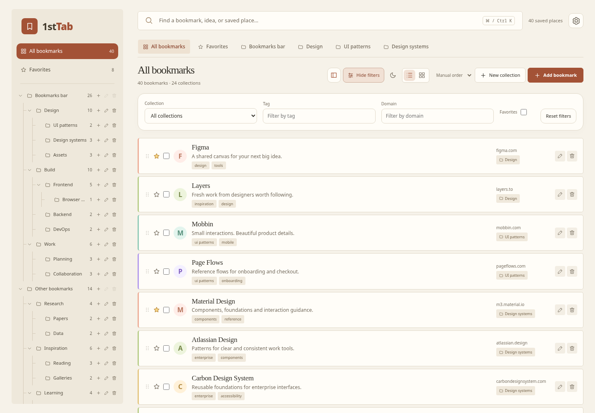
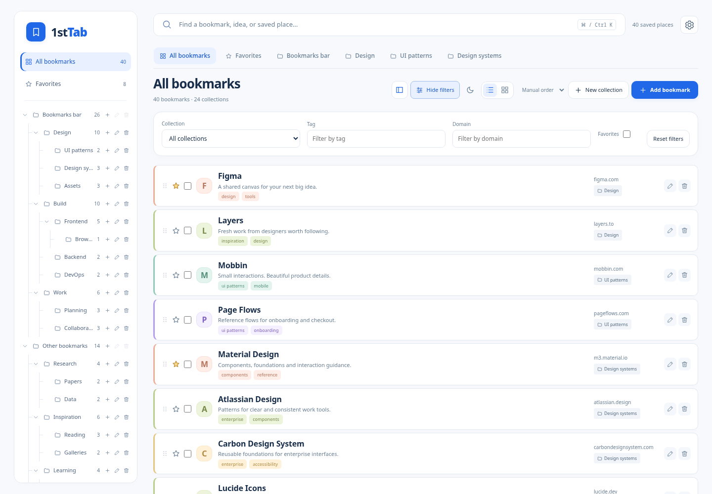
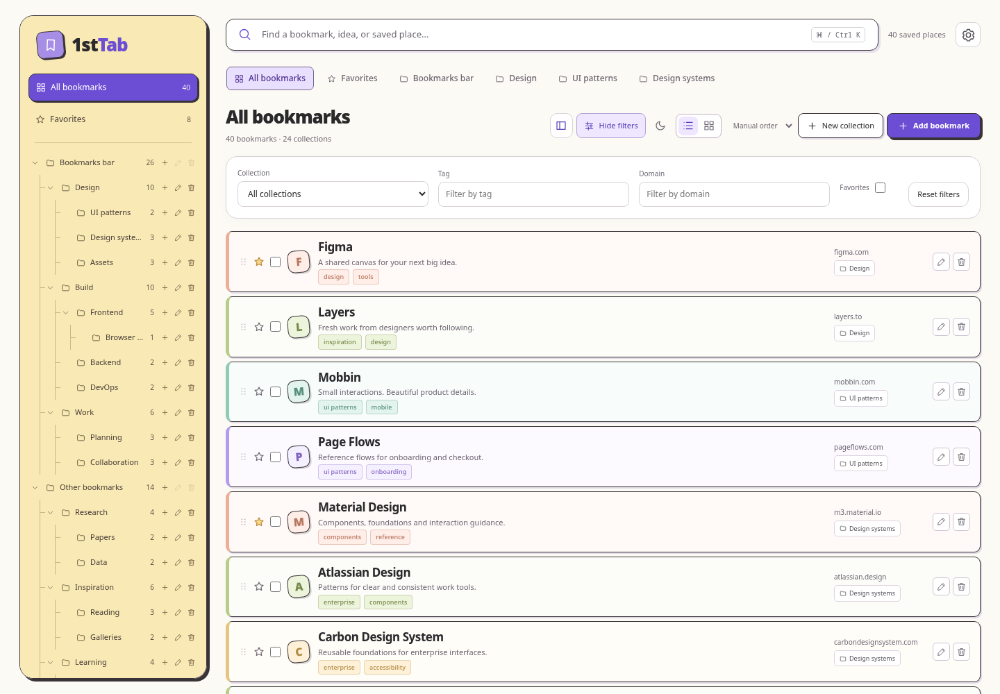
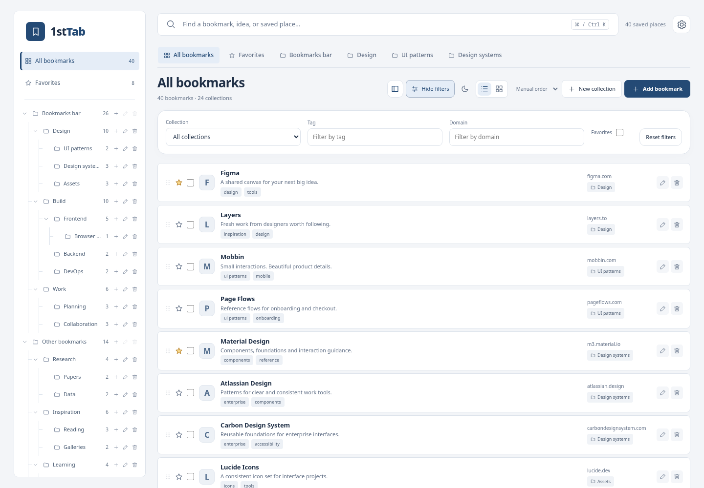

1STTAB · DESIGN EXPLORATION
Choose your workspace.
The same bookmark features, with different typography, shapes, colors, and visual character.

01 / WARM & EDITORIALAtelier
Parchment tones, clay accents, and expressive serif titles. Calm, tactile, and understated.
Try Atelier ↗ 
02 / CLEAN & PRECISEStudio
White surfaces, electric blue, and subtle collection colors. Clear, modern, and focused.
Try Studio ↗ 
03 / PLAYFUL & GRAPHICPop
Lemon yellow, lilac, bold borders, and offset shadows. Colorful and full of personality.
Try Pop ↗ 
04 / FOCUSED & PROFESSIONALEnterprise
Neutral surfaces, restrained navy accents, clear typography and compact rows for a focused workday.
Try Enterprise ↗ Each preview includes 40 sample bookmarks, 21 folders/subfolders, and 43 tags, and supports your current collection, card/list, search, editing, drag-and-drop, and undo controls.